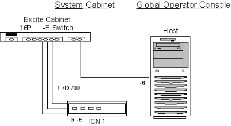

Proprietary to General Electric
Direction 5500113, Rev# 3
Discovery MR750 3.0T Service Methods
Module Version 1.0, Version Date 4/26/07
Proprietary to General Electric |
Diagnostics >> VRE Subsystem >> VRE Communications and Hardware Diagnostic
The purpose of this diagnostic is to functionally test the ICN’s image reconstruction capabilities. In doing so, each ICN will have its components tested, that is, memory, processors, hard disk, software, and so on. This will verify that each ICN is capable of performing reconstruction of images.
This test takes a set of previously collected raw data, and reconstructs the whole set several times, verifying image integrity by performing checksums on the images and validating them against saved checksum values.
ICN Hardware
ICN Software
Software communication between ICNs
The ICNs must be turned on and have a network connection to the Host.
Illustration 1:

Verify the ICNs are turned on.
Select the ICN Reconstruction diagnostic.
Click [Run].
| NOTE: | Once you click [Run], do not click anywhere else in the Common Service Desktop until the test is completed. If you need to abort the test prior to its completion, you must click [Stop]. |
Verify the test completed successfully.
Review the error log and corresponding extended error messages for subsequent actions. Additional responses to the diagnostic’s results are as follows:
Table 1:
| Fault | Problem Description | GE Field Action |
| Failed | The ICN has failed the diagnostic | Follow the (see VRE Troubleshooting Flowchart). Other options:
|
| No ICN’s Defined | Host has no ICNs defined | Check VRE configuration |